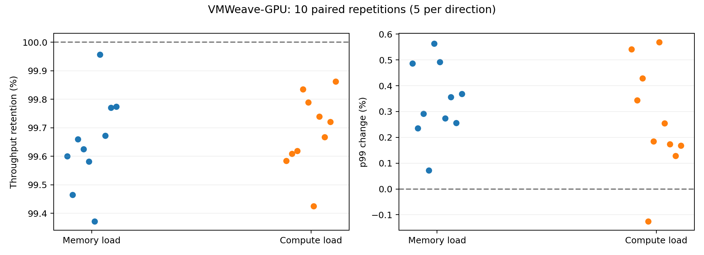

2026-10-12–13 · source 01b7e2a01faf · generated from saved evidence
0 errors / mismatches · all intervals ≥10,000 requests · 20 sessions released

Service suitability: INCONCLUSIVE. Renumbered isolation E2–E4: not executed.
This is a rendered evidence summary, not a live experiment dashboard.